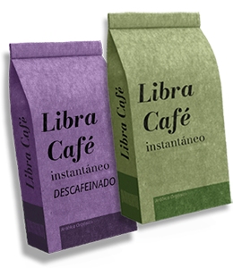
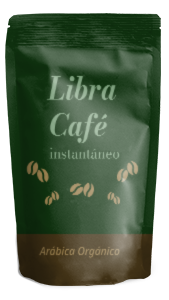
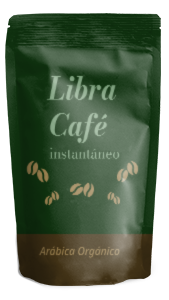

Hacemos café instantáneo con la misma intensidad de un espresso.
Podés disfrutarlo en distintos formatos, siempre manteniendo su sabor característico.
La presentación en saquitos es ideal para hacer cold brew y tener almacenado
para consumir en el momento que quieras.
Para cocinar postres y preparaciones dulces la presentación
en granos es ideal.

Rico y fácil de trasladar
Libra Café cuenta con envases prácticos para el día a día, están pensados para llevar con vos a donde quieras.
Además de contar con diseños coloridos y estéticos, nuestro packaging es sustentable, apto para compost y degradable.
 
